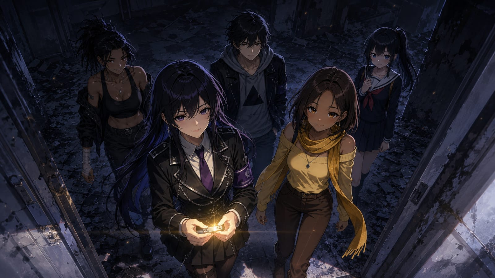
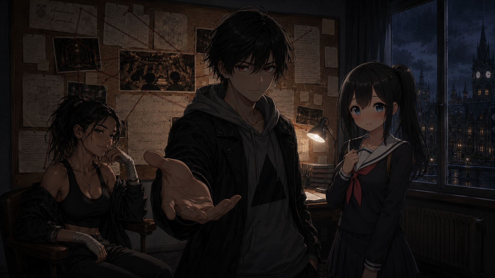
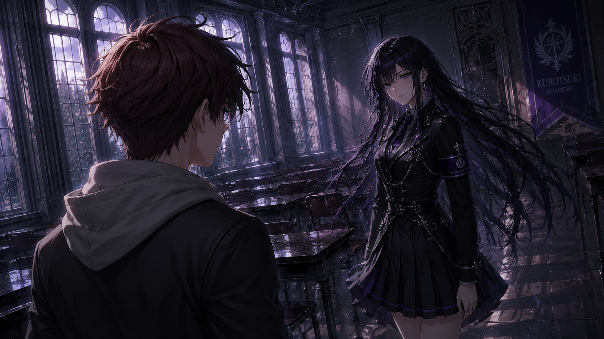
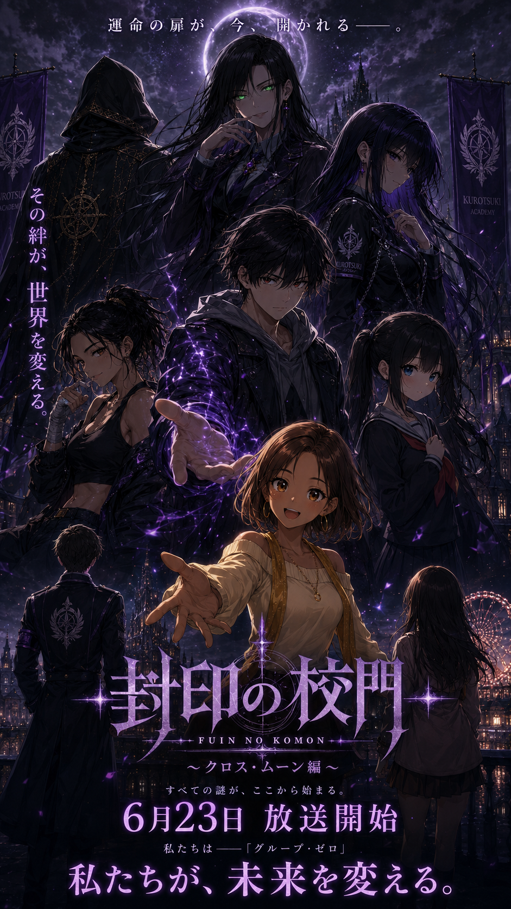

El Arco de la Jerarquía redefine el misterio de Kurotsuki: el Grupo Cero no era el final, sino la entrada

Lo que comenzó como una historia escolar cargada de misterio terminó convirtiéndose en uno de los thrillers psicológicos más comentados dentro del universo de Cross Moon.
Tras el impactante cierre del Arco del Grupo Cero, Las Puertas Selladas (Fuin no Komon) entra oficialmente en su segundo gran capítulo narrativo: El Arco de la Jerarquía.
La serie abandona gradualmente la búsqueda de respuestas inmediatas para explorar una pregunta mucho más inquietante:
El legado del Grupo Cero
Durante gran parte de la primera temporada, los espectadores fueron llevados a creer que el Grupo Cero era una organización secreta de estudiantes operando en las sombras.
Sin embargo, los acontecimientos ocurridos en el Ala Sellada destruyeron por completo esa teoría.
La revelación de que el Grupo Cero era en realidad un protocolo de observación y contención redefinió el rumbo de la historia y elevó la escala del misterio a niveles completamente inesperados.
Lejos de resolver preguntas, el final del arco dejó la sensación de que los protagonistas apenas habían descubierto la primera capa de algo mucho más grande.

Eiden y la búsqueda de su hermano
Uno de los ejes emocionales más importantes de la serie continúa siendo la búsqueda obsesiva de Eiden por descubrir qué ocurrió con su hermano.
Lo que inicialmente parecía una desaparición convencional ha evolucionado hacia una conspiración mucho más profunda relacionada con los sistemas ocultos de la academia.
La frase:
se ha convertido rápidamente en uno de los mayores misterios de toda la franquicia y una de las teorías más discutidas por la comunidad.
Cristal y Reina: el duelo de estrategas
Mientras Eiden representa la voluntad y Aoi el corazón emocional del grupo, el segundo arco coloca gran parte de su peso narrativo sobre la compleja relación entre Cristal y Reina.
Ambos personajes operan como jugadores de ajedrez dentro de una academia donde la información vale más que cualquier posición de poder.
Su alianza temporal se perfila como uno de los elementos más interesantes de esta nueva etapa.

El Arco de la Jerarquía
La gran promesa de esta nueva etapa es simple:
El Ala Sellada no era el destino.
Era la entrada.
Nuevos niveles ocultos bajo Kurotsuki, registros perdidos y organizaciones aún desconocidas comienzan a aparecer conforme la serie expande su mundo.
Si el Arco del Grupo Cero trataba sobre descubrir la existencia del misterio, el Arco de la Jerarquía parece centrarse en descubrir quién lo creó.

La llegada de Luna
Entre tantas conspiraciones y secretos, la introducción de Luna aporta una nueva perspectiva al elenco principal.
Su aparente normalidad contrasta con el ambiente cada vez más extraño que rodea a Kurotsuki, generando preguntas sobre el verdadero papel que podría desempeñar en los acontecimientos futuros.
¿Qué esperar de los próximos episodios?
Con alarmas activadas, secretos enterrados bajo la academia y múltiples personajes persiguiendo respuestas distintas, la segunda parte de Fuin no Komon promete elevar la tensión psicológica a un nuevo nivel.
La búsqueda del hermano de Eiden.
El pasado de Cristal con Amy.
Reina como un aliado más recurrente.
Y la existencia de estructuras aún más antiguas bajo Kurotsuki.
Todo apunta a que el misterio apenas está comenzando.
Las Puertas Selladas
O Fuin no Komon es una serie de misterio y thriller psicológico que ha capturado la atención de los espectadores en el Draw World JC-2. Con su narrativa intrigante y personajes complejos, la serie continúa explorando los secretos ocultos bajo la Academia Kurotsuki y los sistemas que gobiernan su funcionamiento. El Arco de la Jerarquía promete llevar a los fans a un viaje aún más profundo en este universo lleno de enigmas y conspiraciones.